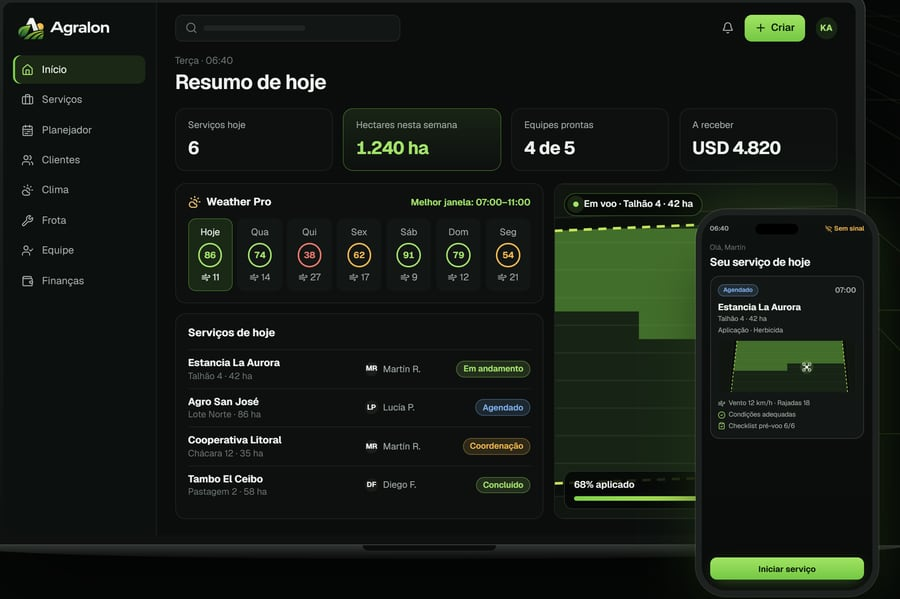

Pulverização
Aplicação de defensivos agrícolas por via aérea, sem precisar entrar na lavoura com máquinas terrestres.
Serviços agrícolas com drones · Uruguai
Serviços agrícolas com o DJI Agras T100: pulverização, semeadura, adubação e trabalhos em áreas de difícil acesso.

Por que aplicação aérea
Máquinas pesadas não são a melhor resposta para toda situação. O drone aplica sem rodar sobre a lavoura e abre possibilidades em talhões de acesso difícil ou com o solo sem condições de tráfego.
Aplicação aérea sem máquinas rodando sobre a lavoura.
Uma alternativa quando as condições do solo dificultam a entrada de equipamentos pesados.
Cada trabalho é planejado e executado de acordo com a cultura, o produto e as condições do talhão.
Tecnologia projetada para cobrir grandes áreas com uma operação organizada e eficiente.
Serviços
Aplicação de defensivos agrícolas por via aérea, sem precisar entrar na lavoura com máquinas terrestres.
Distribuição aérea de sementes, incluindo plantas de cobertura e outras aplicações compatíveis com o sistema.
Aplicação aérea de fertilizantes sólidos quando a urgência ou as condições do terreno tornam a solução aérea especialmente útil.
Aplicações em baixadas, áreas com problemas de trafegabilidade e outros locais onde a entrada com máquinas convencionais é complicada.

Tecnologia
Uma plataforma agrícola projetada para operações profissionais.
Trabalhamos com um equipamento de grande porte, feito para o trabalho agrícola de verdade: pulverização e distribuição de sementes e fertilizantes sólidos, com sistemas de detecção do entorno e voo planejado sobre o talhão.
Radar de ondas milimétricas, LiDAR e sistema de visão para detecção de obstáculos. Dados do fabricante (DJI). A configuração de cada trabalho é definida conforme a cultura, o produto e as condições do talhão.

Controle da aplicação
São cartões de papel amarelo que ficam azuis onde as gotas os atingem. Colocados no talhão, mostram como a pulverização chegou e permitem conferir a cobertura com um resultado visível.
Aplicações
Nem toda aplicação é adequada para qualquer cultura ou produto. A viabilidade é avaliada caso a caso, antes de agendar o trabalho.
Trabalhos no campo
Imagens próprias de operações da Kunz Agrotech com o DJI Agras T100. Sem cenas montadas e sem imagens de banco.


Como trabalhamos
Cultura, área, localização e tipo de trabalho.
Analisamos as características principais do trabalho e combinamos as condições.
Definimos data e operação conforme as condições adequadas para o trabalho.
Realizamos a operação com o equipamento e o planejamento adequados.

Quem somos
A Kunz Agrotech é um serviço especializado em soluções agrícolas com drones, com base no departamento de San José e operações conforme o projeto em diferentes regiões do Uruguai.
A empresa foi fundada por Stanley Kunz, que também participa diretamente da operação dos serviços com drones.
Nossa forma de trabalhar combina tecnologia moderna, planejamento e um padrão de qualidade inspirado em nossas raízes alemãs, adaptado às necessidades reais do campo uruguaio.
Área de atuação
Nossa base operacional fica no departamento de San José. Avaliamos trabalhos em outras regiões do país conforme a área, a localização e o tipo de serviço.
Orçamentos
Cada trabalho é diferente. Para orçar, precisamos de poucos dados:
Tecnologia que também desenvolvemos

Trabalhamos no campo e também desenvolvemos tecnologia para quem trabalha nele.
O Agralon é a nossa plataforma para empresas de serviços agrícolas com drones: clientes e áreas, trabalhos, planejamento, frota, equipe, relatórios e faturamento em um só sistema. Nasceu da experiência da Kunz Agrotech no campo.
Do pedido do cliente ao trabalho agendado, com piloto e máquina definidos.
Cada talhão com seu contorno, seus hectares e o histórico de aplicações.
Vento, rajadas e chuva por hora, e um app para o piloto que funciona sem sinal.
Manutenção de drones e baterias, relatórios de aplicação, orçamentos e faturas em PDF.

Perguntas frequentes
Tem outra dúvida? Fale com a gente pelo WhatsApp e respondemos diretamente.
Nossa base fica no departamento de San José. Avaliamos trabalhos em outros departamentos conforme a área, a localização e o tipo de serviço.
Localização da área, área aproximada, cultura e tipo de aplicação. Com esses dados já podemos dar uma primeira resposta.
Não. A Kunz Agrotech também oferece outros serviços compatíveis com a plataforma agrícola, incluindo semeadura a lanço e determinadas aplicações de fertilizantes.
A aplicação aérea pode ser uma alternativa em muitas situações com problemas de acesso ou condições de solo complicadas. A viabilidade é avaliada em cada trabalho.
Diretamente pelo WhatsApp +598 92 800 358 ou pelo formulário de contato, logo abaixo.
Contato
Conte o que você precisa e avaliamos a melhor forma de fazer.
Solicitar orçamento pelo WhatsAppPasso 3 de 3
Abrimos o WhatsApp com sua consulta já escrita. Revise e toque em Enviar na conversa. Só recebemos depois que você enviar.
Abrimos seu aplicativo de e-mail com a consulta já escrita. Revise e envie por lá. Só recebemos depois que você enviar.
Respondemos o mais rápido possível.